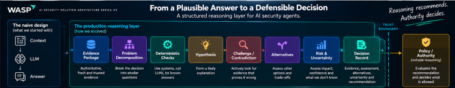

The AI Gave the Right Answer. That Wasn't Good Enough.
In Article #1, we asked what FIX actually meant.
That forced us to separate what AI can do from what we are prepared to let it do.
In Article #2, the agent asked for more context.
Then Git, CMDB, Kubernetes and our architecture repository gave it different versions of reality.
That forced us to think about authority, freshness, provenance and trust.
WASP has now solved both problems reasonably well.
The agent has the right context.
And this time, it gives us the right answer.
You'd think that's where things get easier.
It isn't.
Tuesday, 11:15 AM. Architecture review.
The security agent has been investigating a critical vulnerability in checkout-api.
Its recommendation appears on screen:
Upgrade payment-core from 4.7 to 4.9.
Good context.
Clear explanation.
High confidence.
The Engineering Manager asks:
“So we raise the PR?”
Probably.
Then an architect asks:
“What would have to be true for this recommendation to be wrong?”
Silence.
The agent has done an excellent job explaining why it believes the upgrade is correct.
It hasn't shown whether it seriously looked for reasons not to do it.
That's a different problem.
And it takes us into the next layer of the architecture:
Reasoning.
A Good Answer Is Not the Same as a Good Decision
For a chatbot, a plausible answer may often be enough.
For an agent recommending changes to production systems, I want more.
Did it check whether 4.9 changes an API contract?
Whether the application depends on behaviour removed in 4.8?
Whether a compensating control already reduces the urgency?
Whether the vulnerable function is actually exercised by the deployed configuration?
Whether another dependency prevents the upgrade?
Whether the test suite meaningfully covers the affected path?
Whether there is a safer remediation option?
None of these are arguments against AI.
They're arguments for designing how AI reasons when its recommendations can cause real-world actions.
The architecture question becomes:
How do we move from plausible reasoning to defensible decision-making?
Decision #1: Don't Ask the Model to “Analyse Everything”
Our first design was predictable:
Finding + Context + Prompt → Model → Recommendation
It worked surprisingly well for straightforward findings.
The problems appeared with ambiguous ones.
Now the model had to simultaneously reason about security, reachability, architecture, dependencies, runtime state, business criticality, remediation options and test coverage.
All hidden inside one innocent-looking question:
“What should we do?”
So WASP stopped asking everything at once.
Instead, we decomposed the decision.
Is the finding real?
Is the vulnerable path reachable?
What is actually exposed?
What remediation options exist?
What could each option break?
What evidence supports each option?
What evidence contradicts it?
And only then:
What should we recommend?
Slower?
Sometimes.
That's fine.
Not every decision deserves the same reasoning depth.
We'll come back to that when this architecture meets 2,500 applications.
Decision #2: Separate Facts, Inference and Recommendation
Consider this statement:
“The vulnerability is exploitable and should be patched immediately.”
It sounds like one conclusion.
It isn't.
There are at least three different things hiding inside it.
FACT
checkout-api is running payment-core 4.7.
INFERENCE
The vulnerable function appears reachable through the deployed checkout path.
RECOMMENDATION
Upgrade to 4.9.
Those are not equivalent.
The fact may come directly from authoritative runtime evidence.
The inference depends on analysis.
The recommendation depends on both—and on the consequences of taking action.
If we collapse all three into one AI-generated paragraph, a shaky inference can quietly inherit the apparent certainty of a hard fact.
So instead of storing only the final answer, WASP creates a compact Decision Record.
It contains:
Evidence observed — what do we actually know?
Assessment derived — what are we inferring?
Alternatives considered — what else could we do?
Contradictory evidence — what doesn't fit our current hypothesis?
Remaining uncertainty — what don't we know?
Recommendation — given all of that, what appears to be the appropriate next action?
Notice what's deliberately missing:
the model's entire chain of thought.
That's not what we need.
We need an auditable record of the evidence and decision basis, not a transcript of every internal reasoning step produced by the model.
That's an important distinction.
Decision #3: Make the Agent Try to Disprove Itself
This is where the architecture review became more interesting.
Instead of asking:
“How confident are you?”
we asked:
“What evidence would make this recommendation wrong?”
Now the agent has to actively look for:
a breaking API change,
an incompatible dependency,
missing regression coverage,
a safer alternative version,
an incorrect reachability assumption,
or evidence that the proposed remediation creates risk somewhere else.
That's a real shift.
A system that only gathers supporting evidence can become extremely good at defending its first answer.
That doesn't make the answer robust.
So the reasoning pattern evolves.
Evidence → Conclusion
becomes:
Evidence → Hypothesis → Challenge → Alternatives → Recommendation
Sometimes this is where a second reasoning pass earns its cost.
Sometimes a separate reviewer agent makes sense.
But there is an important trap here:
Agent count is not independence.
Two agents running the same model, using the same context, operating with the same assumptions can confidently agree on exactly the same mistake.
A second agent is valuable when it introduces genuine independence:
different evidence,
different tools,
different responsibilities,
different permissions,
a different reasoning approach,
or a deliberate challenge function.
Six boxes on an architecture diagram do not automatically create six independent opinions.
Decision #4: Let Deterministic Systems Answer Deterministic Questions
This sounds obvious.
It is surprisingly easy to ignore once everything becomes “agentic.”
Is 4.7 lower than 4.9?
Did CI pass?
Does this workload carry the production label?
Is test coverage above the required threshold?
Was runtime context collected less than five minutes ago?
These don't need an LLM to reason about them.
They're deterministic questions.
Let deterministic systems answer them.
Use probabilistic reasoning where we genuinely need:
interpretation,
ambiguity resolution,
synthesis,
trade-offs,
or judgment under incomplete evidence.
This gives us another useful principle:
Don't spend probabilistic reasoning on questions that already have deterministic answers.
It's cheaper.
It's faster.
But more importantly, it removes uncertainty from places that never needed uncertainty in the first place.
Decision #5: Confidence Needs Context Too
Then someone asks the inevitable question:
“The model says 96% confidence. Isn't that enough?”
Enough for what?
Consider two recommendations.
Recommendation A — 96%
Based on:
current runtime state,
confirmed reachability,
strong regression tests,
known rollback,
and a history of similar successful remediation.
Recommendation B — 96%
Based on:
four-month-old architecture documentation,
partial repository access,
no runtime telemetry,
and unknown test coverage.
Same number.
Very different decision quality.
So WASP stops treating confidence as a magic scalar.
We care about:
evidence completeness,
authority,
freshness,
contradictions,
unknowns,
and the consequence of being wrong.
That last one matters.
The consequence of uncertainty matters as much as the amount of uncertainty.
Being wrong about a dependency bump in an isolated internal utility is one thing.
Being wrong about authentication logic in checkout is another.
Even if both say:
96%.
What the Reasoning Layer Became
Our original reasoning layer was effectively:
Context → Model → Answer
Now it looks more like a controlled decision process:

And then something important happens.
The Decision Record leaves the reasoning layer.
It goes to:
Policy / Authority
The reasoning system can say:
“Based on the available evidence, upgrading to 4.9 appears to be the appropriate remediation.”
It should never silently turn that into:
“Therefore, I'm authorized to modify production.”
Those are two different decisions.
Reasoning recommends.
Authority decides.
We'll open that box in the next article.
Then WASP Runs It Across 2,500 Applications
The pilot works.
Again.
And, as usual, success creates the next architecture problem.
Reasoning is expensive.
Not only financially.
Every additional reasoning step introduces:
latency,
tokens,
tool calls,
dependencies,
and another place where something can fail.
Running deep adversarial reasoning for every low-risk dependency finding would be absurd.
So WASP introduces Reasoning Tiers.
Tier 0 — Deterministic Known rule. Known answer. No model.
Tier 1 — Lightweight Low-risk classification, summarisation and straightforward remediation.
Tier 2 — Security reasoning Reachability, remediation options and conflicting evidence.
Tier 3 — Deep reasoning High-impact, ambiguous or novel decisions.
Tier 4 — Human escalation Evidence insufficient or consequences too high.
Now model routing isn't merely a cost optimisation.
It's part of the risk architecture.
Reasoning depth should follow the risk and ambiguity of the decision.
Not every finding deserves your most capable model.
And not every finding deserves AI at all.
Reasoning Can Go Stale Too
Here's another production problem.
At 10:02 AM, the agent performs excellent analysis.
At 10:07, a new deployment happens.
At 10:09, policy approves the recommended action.
At 10:10, execution begins.
Is the reasoning from 10:02 still valid?
Maybe.
Maybe not.
This is where Article #2's context freshness problem comes back into the reasoning layer.
A Decision Record shouldn't merely say:
Recommendation generated: 10:02.
It should capture the assumptions under which that recommendation remains valid.
For example:
Valid while deployed image = SHA-7821 and payment-core = 4.7.
If either changes before execution?
Don't blindly act on the old recommendation.
Re-reason.
Context can have a TTL.
So can a decision.
Then We Found the Most Uncomfortable Failure Mode
The agent was right.
Again.
And again.
Its recommendations were good.
Engineers trusted them.
Reviews became faster.
Then something changed.
At the beginning, engineers asked:
“Why is this recommendation correct?”
A few months later, they were asking:
“Why shouldn't we accept it?”
Those questions sound similar.
They aren't.
The burden of proof had moved.
No policy changed.
No architecture diagram changed.
No additional permission was granted.
But human behaviour changed.
High historical accuracy was quietly becoming organizational authority.
This is where AI risk stops being purely technical.
A reliable system creates trust.
Trust creates reliance.
Reliance creates automation pressure.
And automation pressure changes how carefully humans challenge the machine.
That's why good reasoning architecture needs something that doesn't appear on most AI diagrams:
deliberate friction at the right places.
Not everywhere.
That would defeat the point of automation.
But wherever passive acceptance becomes expensive if the system is wrong.
Where WASP Landed
Not:
“Use the smartest model.”
Not:
“Ask the AI to explain itself.”
Not:
“Add five more agents.”
And definitely not:
“96% means we're safe.”
Instead:
Use authoritative evidence.
Separate facts from inference.
Decompose complex decisions.
Keep deterministic questions away from probabilistic reasoning.
Force important recommendations to face contradictory evidence.
Record alternatives and uncertainty.
Scale reasoning depth with risk.
Invalidate reasoning when its assumptions change.
And keep reasoning separate from authorization.
Which leaves one principle on the WASP whiteboard:
A convincing explanation is not a defensible decision.
I don't want an AI that's exceptionally good at explaining why it's right.
I want an architecture designed to discover when it might be wrong.
Five Questions for Your Next AI Architecture Review
1. Can the agent distinguish evidence from inference from recommendation?
2. What evidence would make it change its conclusion?
If the answer is:
“Nothing. It was 96% confident.”
That's probably the review right there.
3. Which parts of this decision never needed an LLM in the first place?
4. Does reasoning depth increase with risk and ambiguity?
5. What invalidates the recommendation when the environment changes underneath it?
Next: AI Security Solution Architecture #4 — Authority
WASP now has:
the right context,
a defensible recommendation,
and uncertainty supported by evidence.
Then someone asks:
“It's 98% confident. Why are we still asking a human?”
Fair question.
But there's a dangerous assumption hidden inside it.
Because:
Model confidence is evidence. It is not authorization.
Next, we'll open the Authority box.
Who—or what—decides what an AI agent is actually allowed to do?
And why should 98% confidence never become your access-control policy?